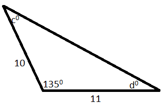

|
1. Column A Column B
The number of different The number of different
positive divisors of 12. positive divisors of 50.
A. The quantity in Column A is greater.
B. The quantity in Column B is greater.
C. The quantities in both the columns are equal.
D. The relationship cannot be determined from the information given.
2. a, b, c are negative integers.
Column A Column B
abc a(b+c)
A. The quantity in Column A is greater.
B. The quantity in Column B is greater.
C. The quantities in both the columns are equal.
D. The relationship cannot be determined from the information given.
FOR QUESTIONS 3 TO 7, REFER TO THE FOLLOWING GRAPH.
NUMBER OF MOTOR VEHICLES IN FIVE COUNTRIES
1983 AND 1985
|
Number of Motor Vehicles |
||||
|
1983 |
1985 |
|||
|
Country |
Per Square Mile |
Per 1,000 Population |
Per square Kilometer * |
Per 1000 Population |
|
A |
109 |
182 |
49 |
206 |
|
B |
60 |
243 |
23 |
252 |
|
C |
54 |
123 |
29 |
167 |
|
D |
109 |
190 |
49 |
220 |
|
E |
23 |
447 |
9 |
453 |
*1 square mile = 2.6 square kilometers.
3. If in 1983 the total area of Country B was 95000 square miles. How many million motor vehicles did it have?
A. 1.6
B. 2.2
C. 4.1
D. 5.7
E. 6.3
4. In 1985 Country D had approximately how many motor vehicles per square mile?
A. 190
B. 125
C. 110
D. 50
E. 35
5. In 1983 the number of motor vehicles per square mile for Country E was approximately what percent of the number of motor vehicles per square mile for Country A?
A. 18%
B. 21%
C. 27%
D. 33%
E. 47%
6. If the population of country D in 1983 was 80 million. The number of motor vehicles in that country was how many million?
A. 15.2
B. 16.5
C. 17.0
D. 17.6
E. 18.1
7. In 1985 the number of square kilometers per 100 motor vehicles in Country C was approximately
A. 0.29
B. 0.34
C. 1.34
D. 2.90
E. 3.45
8. John has 10 pairs of matched socks. If he loses 7 individual socks. What is the greatest number of pairs of matched socks he can have left?
A. 7
B. 6
C. 5
D. 4
E. 3
9. A certain clock marks every hour by striking a number of times equal to an hour it is. And the time required for a stroke is exactly equal to the time interval between two strokes. At 6:00 the time lapse between the beginning of the first stroke and the end of last stroke is 22 seconds. At 12:00 how many seconds elapse between the beginning of the first stroke and the end of the last stroke?
|
|
10. n/x = 428 and n/y= 107, where n > 0
Column A Column B
x y
A. The quantity in Column A is greater.
B. The quantity in Column B is greater.
C. The quantities in both the columns are equal.
D. The relationship cannot be determined from the information given.
11. If n is positive integer and n2 is divisible by 72, then the largest positive integer that must divide n is
A. 6
B. 12
C. 24
D. 36
E. 48
12. If -3 is 6 more than x. what is the value of x/3?
A. -9
B. -6
C. -3
D. -1
E. 1
13. r=400(D+S-P)/P
If stock is sold three months after it is purchased the formula above relates P,D,S and r, where P is the purchase price of the stock, D is the amount of any dividend received, S is selling price of the stock, and r is the yield of the investment as a percent. If Rose purchased $400 worth of stock, received a dividend of $5, and sold the stock for $420 three months after purchasing it. What was the yield of her investment according to the formula? (Assume that she paid no commission.)
|
|
14. An athlete runs R miles in H hours, then rides bicycle Q miles in the same number of hours. Which of the following represents the athlete’s average speed, in miles per hour, for these two activities combined?
A. (R-Q)/H
B. (R-Q)/2H
C. [2(R+Q)]/H
D. [2(R+Q)]/2H
E. (R+Q)/2H
15. The positive sequence S1, S2, S3…… Sn…… is defined by Sn = Sn-1 + 5 for n ≥ 2. If S1 = 7, then the nth term in the sequence is
A. 5n – 5
B. 5n – 2
C. 5n
D. 5n + 2
E. 5n + 7
16. a = -2
Column A Column B
a4 - a3 + a2 – a a - a2 + a3 - a4
A. The quantity in Column A is greater.
B. The quantity in Column B is greater.
C. The quantities in both the columns are equal.
D. The relationship cannot be determined from the information given.
17. a and b are primes, a + b = 12
Column A Column B
b 8
A. The quantity in Column A is greater.
B. The quantity in Column B is greater.
C. The quantities in both the columns are equal.
D. The relationship cannot be determined from the information given.
|  |
18.
Column A Column B
c d
A. The quantity in Column A is greater.
B. The quantity in Column B is greater.
C. The quantities in both the columns are equal.
D. The relationship cannot be determined from the information given.
FOR QUESTIONS 19 AND 20, SELECT ALL THE ANSWER CHOICES THAT APPLY.
19. The average (arithmetic mean) of five consecutive integers is an odd number. Which of the following must be true?
A. The largest of the integers is even.
B. The sum of the integers is odd.
C. The difference between the largest and smallest of the integers is an even number.
20. If a and b are integers such that a + b = 5, which of the following must be true?
A. The product of a and b is odd.
B. If a is odd, b is even.
C. If a is negative, b is positive.